Dokumentasi Willa PMS
Panduan penggunaan Willa PMS, HRIS untuk operasional hotel.
Willa PMS adalah HRIS untuk operasional hotel, mencakup presensi, shift, izin, dan data karyawan. Dokumentasi ini menjelaskan cara menggunakan Willa PMS untuk semua peran: Employee, HOD, dan HRD.
Ringkasan
Dokumentasi ini terus diperbarui secara berkala mengikuti perkembangan aplikasi di production. Setiap kali ada fitur baru, perubahan alur, atau perbaikan, halaman terkait akan disesuaikan agar tetap relevan dengan versi aplikasi yang sedang berjalan.
Jika Anda menemukan informasi yang sudah tidak sesuai dengan aplikasi, laporkan ke tim terkait agar halaman tersebut diperbarui.
Status dokumentasi
Setiap halaman punya status yang menandakan sejauh mana kontennya bisa diandalkan.
| Status | Arti |
|---|---|
published | Konten sudah lengkap dan diverifikasi. Aman dijadikan acuan. |
draft | Konten belum lengkap atau masih menunggu verifikasi, dan bisa berubah sewaktu-waktu. |
ℹ️ Info: Halaman berstatus draft masih menampilkan notice bahwa kontennya sedang dalam pengembangan.
Peran dan hak akses
Willa PMS memiliki tiga peran, dan tampilan maupun menu yang tersedia berbeda untuk masing-masing peran.
- Employee: mengakses fitur untuk kebutuhan harian, misalnya presensi dan pengajuan izin.
- HOD (Head of Department): mengakses fitur Employee ditambah kewenangan untuk timnya, misalnya persetujuan izin dan pengelolaan shift.
- HRD: mengakses seluruh fitur operasional HR, termasuk pengelolaan data karyawan di satu atau beberapa merchant.
Penjelasan lengkap tentang hak akses tiap peran ada di halaman Peran dan Hak Akses.
Lihat juga
Getting Started
Panduan paling awal untuk mulai menggunakan Willa PMS.
Getting Started adalah panduan paling awal untuk masuk ke Willa PMS, sebelum Anda menggunakan fitur-fitur lain di dokumentasi ini.
Ringkasan
Bagian ini mencakup tiga hal dasar yang perlu Anda ketahui sebelum mulai bekerja dengan Willa PMS: cara login dan aktivasi akun, cara mengakses aplikasi melalui browser, serta peran dan hak akses yang berlaku untuk akun Anda.
Siapa yang menggunakan
Semua peran, yaitu Employee, HOD, dan HRD, mulai dari halaman ini sebelum menggunakan fitur lain di Willa PMS.
Prasyarat
- Email Anda sudah terdaftar di sistem sesuai peran.
- Anda sudah menerima credentials login, atau menggunakan akun Google yang terdaftar.
Sub-fitur
- Login dan Aktivasi Akun: cara login menggunakan akun Google atau email dan password.
- Akses aplikasi via browser: penjelasan bahwa Willa PMS berbasis browser, bukan aplikasi yang diinstal.
- Peran dan Hak Akses: penjelasan peran Employee, HOD, dan HRD beserta hak aksesnya.
Lihat juga
Login dan Aktivasi Akun
Cara login ke Willa PMS menggunakan akun Google atau email dan password.
Halaman ini menjelaskan cara login ke Willa PMS untuk semua peran, menggunakan akun Google atau email dan password yang sudah terdaftar.
Ringkasan
Anda bisa login ke Willa PMS dengan dua cara: menggunakan akun Google, atau menggunakan email dan password yang sudah didaftarkan. Halaman tujuan setelah login berhasil berbeda menurut peran Anda.
Sebelum memulai
- Koneksi internet aktif dan browser versi terbaru.
- Salah satu dari: akun Google yang terdaftar di Willa PMS, atau email dan password yang sudah didaftarkan.
Lihat Akses aplikasi via browser untuk informasi siapa yang mendaftarkan email Anda.
Langkah-langkah
Buka halaman login
- Buka browser di perangkat Anda.
- Kunjungi
pms.willa.com.
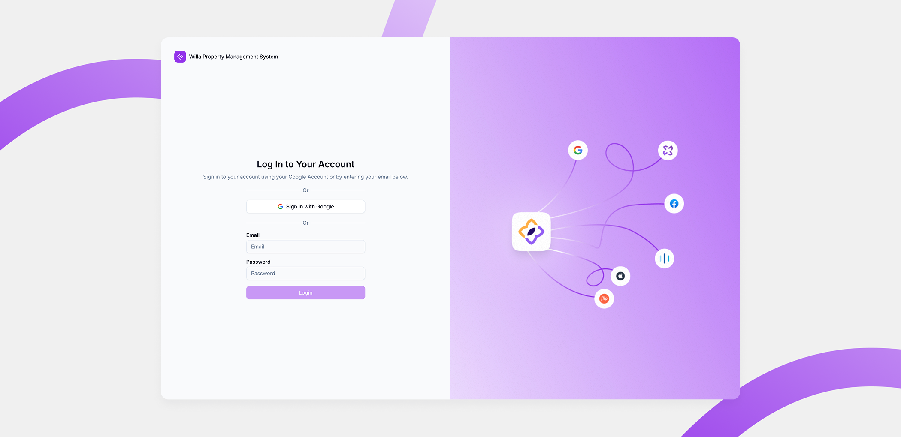
Login dengan akun Google
- Ketuk tombol Sign in with Google.
- Pilih akun Google yang terdaftar di Willa PMS.
Login dengan email dan password
- Isi kolom Email dengan alamat email Anda.
- Isi kolom Password dengan kata sandi Anda.
- Ketuk tombol Login.
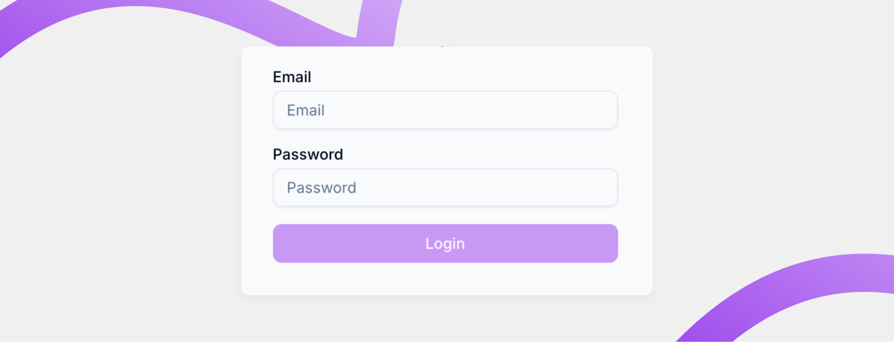
⚠️ Perhatian: Jika email tidak terdaftar atau password yang Anda masukkan salah, Anda tidak bisa masuk. Sistem menampilkan pesan kesalahan dan meminta Anda mencoba lagi.
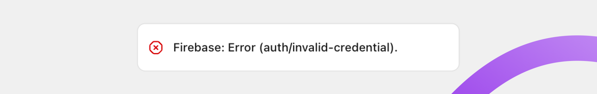
Pilih merchant (khusus HRD dengan multiple akun)
Jika Anda login sebagai HRD dan memiliki lebih dari satu akun merchant, Anda diarahkan ke halaman Management Merchant setelah login berhasil, bukan langsung ke halaman Presensi.
Jika akun HRD Anda hanya terhubung ke satu merchant, langkah ini dilewati dan Anda langsung masuk ke halaman Presensi, sama seperti Employee dan HOD.
- Pada halaman Management Merchant, cari card merchant yang ingin Anda masuki.
- Ketuk card merchant tersebut.
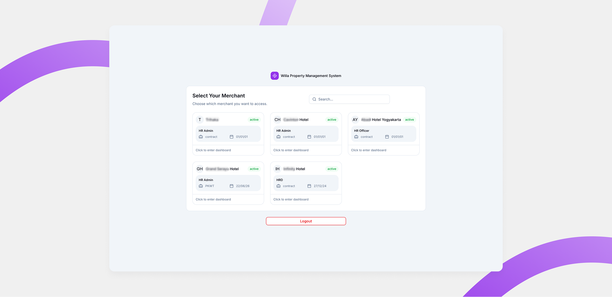
Tombol Logout tersedia di halaman yang sama untuk keluar dari akun tanpa perlu memilih merchant terlebih dahulu.
Hasil
Setelah login berhasil, Anda diarahkan ke halaman berikut sesuai peran.
| Peran | Halaman setelah login |
|---|---|
| Employee | Presensi (Attendance) |
| HOD | Presensi (Attendance) |
| HRD (satu akun) | Presensi (Attendance) |
| HRD (multi akun) | Management Merchant |
Pertanyaan umum
Apa yang terjadi jika saya salah memasukkan email atau password?
Anda tidak bisa masuk. Sistem menampilkan pesan kesalahan dan meminta Anda mencoba lagi.
Bagaimana cara logout dari halaman Management Merchant?
Ketuk tombol Logout yang tersedia di halaman Management Merchant.
Apakah semua HRD selalu diarahkan ke halaman Management Merchant?
Tidak. Halaman Management Merchant hanya muncul jika akun HRD Anda terhubung ke lebih dari satu merchant. Jika hanya satu merchant, Anda langsung masuk ke halaman Presensi.
Lihat juga
Akses aplikasi via browser
Cara mengakses Willa PMS melalui browser tanpa instalasi aplikasi.
Willa PMS bukan aplikasi PWA yang diinstal ke perangkat. Aplikasi ini sepenuhnya berbasis browser, sehingga Anda dapat login dan logout kapan saja menggunakan credentials yang sudah ada, tanpa proses instalasi maupun ikon aplikasi di layar utama.
Ringkasan
Semua peran, yaitu Employee, HOD, dan HRD, mengakses Willa PMS melalui browser di perangkat masing-masing, baik desktop maupun mobile. Anda login menggunakan credentials yang sudah terdaftar, dan dapat logout kapan saja tanpa kehilangan akses ke akun.
Tidak ada file aplikasi yang perlu diunduh atau diinstal untuk menggunakan Willa PMS.
Sebelum memulai
Pastikan hal berikut sebelum mengakses aplikasi:
- Koneksi internet aktif di perangkat Anda.
- Browser versi terbaru, misalnya Chrome, Safari, Edge, atau Firefox.
- Email Anda sudah terdaftar di sistem sesuai peran.
Sumber pendaftaran email berbeda untuk setiap peran.
| Peran | Didaftarkan oleh |
|---|---|
| Employee | HR (HRD) |
| HOD | Developer |
| HRD | Developer |
ℹ️ Info: Jika Anda belum menerima email atau credentials login, hubungi HR (untuk peran Employee) atau Developer (untuk peran HOD dan HRD).
Hasil
Anda dapat mengakses Willa PMS kapan saja melalui browser, login dan logout menggunakan credentials yang sama, tanpa proses instalasi aplikasi apa pun.
Pertanyaan umum
Apakah Willa PMS perlu diinstal seperti aplikasi PWA?
Tidak. Willa PMS adalah aplikasi berbasis browser. Anda cukup membuka alamat aplikasi melalui browser tanpa instalasi apa pun.
Bagaimana jika saya belum punya akun untuk login?
Akun Anda didaftarkan lebih dahulu oleh pihak lain: Developer untuk peran HOD dan HRD, atau HR untuk peran Employee. Hubungi pihak terkait jika Anda belum menerima credentials.
Lihat juga
Peran dan Hak Akses
Penjelasan peran di Willa PMS dan tag peran yang dipakai di dokumentasi ini.
Willa PMS punya tiga peran dengan hak akses berbeda, dan dokumentasi ini menandai setiap halaman dengan tag peran yang sama supaya Anda tahu halaman mana yang relevan untuk Anda.
Ringkasan
Setiap halaman di dokumentasi ini punya satu atau lebih tag peran. Tag ini menunjukkan siapa yang perlu membaca halaman tersebut, sehingga Anda bisa langsung fokus ke bagian yang sesuai dengan peran Anda di Willa PMS.
Peran di Willa PMS
| Peran | Hak akses |
|---|---|
| Employee | Fitur untuk kebutuhan harian, misalnya presensi dan pengajuan izin. |
| HOD | Semua hak akses Employee, ditambah kewenangan untuk timnya, misalnya persetujuan izin dan pengelolaan shift. |
| HRD | Seluruh fitur operasional HR, termasuk pengelolaan data karyawan di satu atau beberapa merchant. |
Tag peran di dokumentasi
Tag peran ditampilkan di bagian atas setiap halaman, menggunakan nama peran yang sama: employee, hod, dan hrd. Jumlah dan kombinasi tag menentukan siapa target halaman tersebut.
- Ketiga tag ada (
employee,hod,hrd): halaman berlaku untuk semua peran, langkah dan tampilannya sama untuk Anda semua. - Hanya satu tag, misalnya
hrd: halaman tersebut khusus untuk peran itu saja. Peran lain tidak perlu membacanya karena fitur atau langkahnya tidak tersedia untuk mereka. - Dua tag, misalnya
hoddanhrd: halaman relevan untuk kedua peran tersebut, dan tidak berlaku untuk peran yang tidak disertakan.
ℹ️ Info: Jika peran Anda tidak termasuk dalam tag sebuah halaman, kemungkinan besar fitur di halaman itu tidak tersedia untuk akun Anda.
Lihat juga
Fitur
Panduan penggunaan Fitur.
🚧 Dokumentasi ini sedang dalam tahap pengembangan. Konten halaman ini akan segera ditambahkan.
Presensi
Panduan penggunaan Presensi.
🚧 Dokumentasi ini sedang dalam tahap pengembangan. Konten halaman ini akan segera ditambahkan.
Face Verification
Panduan penggunaan Face Verification.
🚧 Dokumentasi ini sedang dalam tahap pengembangan. Konten halaman ini akan segera ditambahkan.
Geofencing
Panduan penggunaan Geofencing.
🚧 Dokumentasi ini sedang dalam tahap pengembangan. Konten halaman ini akan segera ditambahkan.
Catatan Fitur: Presensi
Catatan Do & Don't untuk fitur Presensi.
🚧 Dokumentasi ini sedang dalam tahap pengembangan. Konten halaman ini akan segera ditambahkan.
Shift Management
Panduan penggunaan fitur Shift Management untuk peran HOD.
Shift Management adalah kumpulan fitur untuk mengatur jadwal kerja karyawan di Willa PMS.
Ringkasan
Melalui Shift Management, Anda bisa membuat jenis shift, menyusun jadwal karyawan, dan meninjau riwayat presensinya. Ketiga bagian ini saling berkaitan dan dipakai secara berurutan.
Siapa yang menggunakan
Halaman ini untuk peran HOD.
Prasyarat
- Anda login sebagai HOD.
- Anda sudah memahami Peran dan Hak Akses.
Sub-fitur
- Shift Type: membuat dan mengelola jenis shift, termasuk jam mulai, jam selesai, pembagian sesi, dan waktu istirahat.
- Scheduling: menyusun jadwal shift karyawan per tanggal, satu per satu atau banyak sekaligus lewat Bulk Schedule.
- Log History: meninjau riwayat presensi karyawan sebagai hasil jadwal yang sudah berjalan.
Lihat juga
Shift Type
Cara membuat dan mengelola jenis shift kerja karyawan.
Shift Type adalah halaman untuk membuat dan mengelola jenis shift kerja, misalnya shift pagi atau shift malam. Shift Type menjadi dasar sebelum Anda menjadwalkan karyawan di halaman Scheduling.
Ringkasan
Di halaman ini Anda bisa melihat daftar shift type, mencari berdasarkan nama, memfilter berdasarkan department dan status, serta membuat shift type baru. Saat membuat shift type, Anda menentukan nama shift, department, jam mulai, jam selesai, dan waktu istirahatnya.
Sebelum memulai
- Anda login sebagai HOD.
- Anda sudah mengetahui department yang akan memakai shift tersebut.
Langkah-langkah
Buka halaman Type
- Dari menu navigasi, pilih Type.
- Halaman Type terbuka dan menampilkan daftar shift type beserta filter di bagian atas.
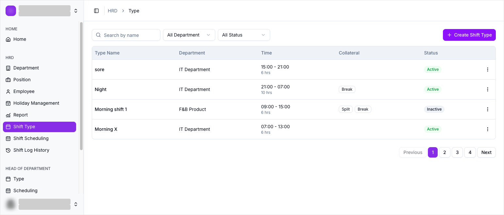
Baca tabel shift type
Tabel menampilkan kolom berikut.
| Kolom | Isi |
|---|---|
| Type Name | Nama jenis shift. |
| Department | Department yang memakai shift ini. |
| Time | Jam mulai sampai jam selesai, plus durasi, misalnya 15:00 - 21:00 dan 6 hrs. |
| Collateral | Penanda Split dan Break bila shift dibagi sesi atau punya waktu istirahat. |
| Status | Active atau Inactive. |
Di bawah tabel ada navigasi halaman: Previous, nomor halaman, dan Next.
Cari dan filter daftar shift type
Di bagian atas halaman tersedia pencarian dan dua filter.
| Kontrol | Isi |
|---|---|
| Search by name | Mencari shift type berdasarkan namanya. |
| All Department | Menampilkan shift type untuk department tertentu, atau semua department. |
| All Status | Menampilkan shift type berdasarkan status Active atau Inactive. |
Buat shift type baru
- Ketuk Create Shift Type.
- Dialog Make Shift Type terbuka.
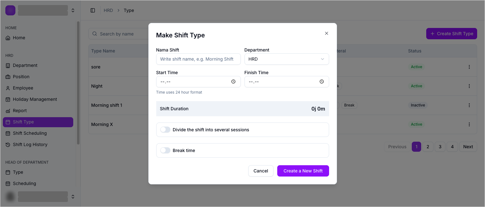
- Isi field pada dialog sesuai tabel berikut.
| Field | Wajib | Isi |
|---|---|---|
| Nama Shift | Ya | Nama jenis shift, misalnya Morning Shift. |
| Department | Ya | Department yang memakai shift ini. |
| Start Time | Ya | Jam shift dimulai, memakai format 24 jam. |
| Finish Time | Ya | Jam shift berakhir, memakai format 24 jam. |
| Shift Duration | Otomatis | Durasi shift yang dihitung otomatis dari Start Time dan Finish Time, misalnya 0j 0m. |
| Divide the shift into several sessions | Tidak | Sakelar untuk membagi shift menjadi beberapa sesi. |
| Break time | Tidak | Waktu istirahat di dalam shift. |
- Ketuk Create a New Shift untuk menyimpan, atau Cancel untuk membatalkan.
⚠️ Perhatian: Aktifkan Divide the shift into several sessions hanya jika satu shift punya lebih dari satu sesi kerja. Untuk shift biasa, biarkan nonaktif.
Kelola shift type yang sudah ada
Tiap baris punya menu aksi (ikon tiga titik) di ujung kanan.
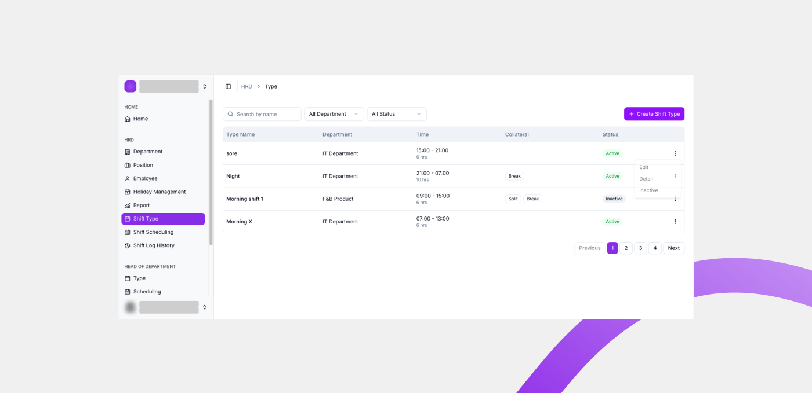
| Aksi | Fungsi |
|---|---|
| Edit | Mengubah data shift type. |
| Detail | Melihat rincian shift type. |
| Inactive | Menonaktifkan shift type. Shift type yang nonaktif tidak bisa dipakai untuk jadwal baru. |
Hasil
Shift type baru tersimpan dan muncul di daftar halaman Type. Shift type tersebut siap dipakai saat Anda menjadwalkan karyawan di halaman Scheduling.
Lihat juga
Scheduling
Cara menyusun jadwal shift karyawan dalam rentang tanggal tertentu.
Scheduling adalah halaman untuk menyusun jadwal shift karyawan di Willa PMS. Anda memakai halaman ini untuk menetapkan shift setiap karyawan pada setiap tanggal.
Ringkasan
Halaman Scheduling menampilkan tabel dengan kolom Karyawan dan kolom tanggal. Anda bisa mengganti periode, memfilter berdasarkan department, memilih mode tampilan, dan mengisi shift pada sel tanggal. Shift yang bisa dipilih berasal dari shift type yang sudah dibuat, lihat Shift Type.
Sebelum memulai
- Anda login sebagai HOD.
- Minimal satu shift type sudah dibuat, lihat Shift Type.
- Anda sudah mengetahui department dan periode yang akan dijadwalkan.
Langkah-langkah
Buka halaman Scheduling
- Dari menu navigasi, pilih Scheduling.
- Halaman Scheduling terbuka dan menampilkan tabel jadwal beserta kontrol di bagian atas.
Kenali kontrol halaman
Sebelum menjadwalkan, kenali kontrol yang tersedia di bagian atas halaman.
| Kontrol | Fungsi |
|---|---|
| Period / Daily | Mode tampilan jadwal. Period menampilkan rentang tanggal penuh, Daily menampilkan jadwal per hari. |
| All Departments | Memfilter tabel hanya untuk department tertentu, atau menampilkan semua department. |
| Bulk Schedule | Menetapkan shift untuk banyak karyawan sekaligus. |
| Today | Melompat ke jadwal tanggal hari ini. |
| Periode | Menentukan rentang tanggal yang ditampilkan, misalnya 21-30 September 2026. |
Baca tabel jadwal
Tabel jadwal terdiri dari dua bagian.
| Bagian | Isi |
|---|---|
| Kolom Karyawan | Inisial, nama, dan department tiap karyawan. |
| Kolom tanggal | Satu kolom untuk setiap tanggal pada periode, misalnya Mon 21 dan Tue 22. |
Setiap sel tanggal berisi tombol yang membuka daftar shift. Jika shift type belum dibuat untuk department tersebut, tombol ini tidak aktif dan jadwal tidak bisa diisi.
Isi shift pada sel tanggal
- Ketuk tombol di dalam sel tanggal untuk karyawan yang dituju.
- Daftar shift yang tersedia terbuka.
- Pilih shift yang ingin ditetapkan pada tanggal tersebut.
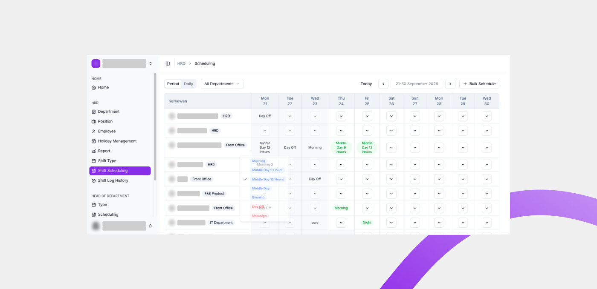
Selain shift type yang sudah dibuat, daftar ini selalu menyediakan dua pilihan.
| Pilihan | Fungsi |
|---|---|
| Day Off | Menandai karyawan libur pada tanggal tersebut. |
| Unassign | Menghapus shift yang sudah ditetapkan pada sel tersebut. |
Jadwalkan banyak karyawan sekaligus
- Ketuk Bulk Schedule.
- Dialog Bulk Scheduling terbuka.
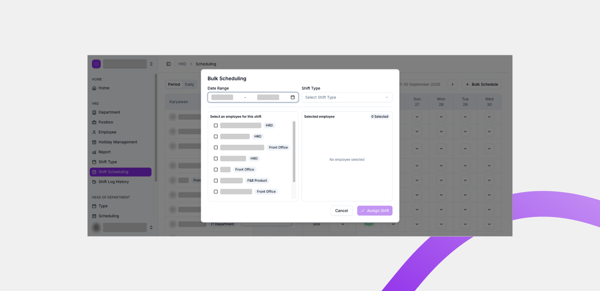
- Isi dialog sesuai tabel berikut.
| Bagian | Isi |
|---|---|
| Date Range | Rentang tanggal yang akan dijadwalkan. |
| Shift Type | Shift yang akan ditetapkan. |
| Select an employee for this shift | Daftar karyawan yang bisa dipilih. Centang satu atau lebih. |
| Selected employee | Karyawan yang sudah dipilih, beserta jumlahnya. |
- Ketuk Assign Shift untuk menyimpan, atau Cancel untuk membatalkan.
Atur filter dan periode
- Pilih All Departments untuk membatasi tabel pada satu department.
- Sesuaikan periode untuk menampilkan rentang tanggal lain.
- Ketuk Today untuk kembali ke jadwal hari ini.
Hasil
Shift yang sudah diisi tampil pada sel tanggal terkait di tabel jadwal. Setelah jadwal berjalan, hasil presensi karyawan dapat ditinjau di halaman Log History.
Lihat juga
Log History
Cara meninjau riwayat presensi karyawan sebagai hasil jadwal shift.
Log History adalah halaman Riwayat Presensi di Willa PMS. Halaman ini menampilkan rekapitulasi kehadiran karyawan berdasarkan jadwal shift yang sudah berjalan.
Ringkasan
Di halaman ini Anda bisa melihat ringkasan kehadiran dan menelusuri riwayat presensi karyawan. Data dikelompokkan per bulan dan bisa difilter berdasarkan status kehadiran.
Sebelum memulai
- Anda login sebagai HOD.
- Karyawan sudah punya jadwal shift, lihat Scheduling.
Langkah-langkah
Buka halaman Riwayat Presensi
- Dari menu navigasi, pilih History.
- Halaman History terbuka dengan judul Riwayat Presensi.
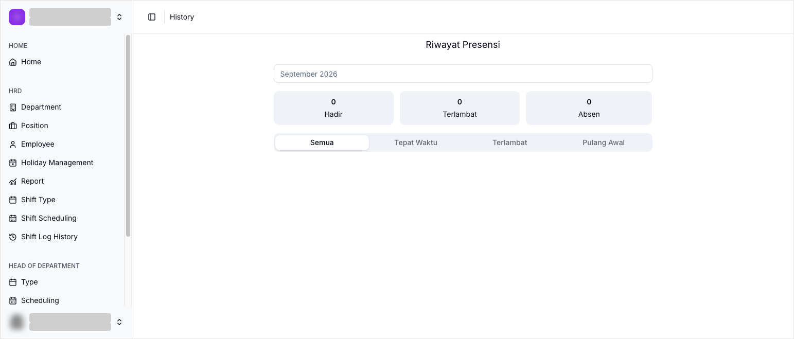
Baca ringkasan kehadiran
Di bagian atas halaman terdapat tiga kartu ringkasan.
| Kartu | Arti |
|---|---|
| Hadir | Jumlah kehadiran karyawan pada periode terpilih. |
| Terlambat | Jumlah keterlambatan karyawan pada periode terpilih. |
| Absen | Jumlah ketidakhadiran karyawan pada periode terpilih. |
Pilih periode
- Ketuk pemilih bulan di bagian atas halaman.
- Pilih bulan yang ingin ditinjau, misalnya
September 2026.
Filter berdasarkan status
Riwayat presensi bisa disaring dengan tab berikut.
| Tab | Isi |
|---|---|
| Semua | Seluruh riwayat presensi. |
| Tepat Waktu | Presensi yang tercatat tepat waktu. |
| Terlambat | Presensi yang tercatat terlambat. |
| Pulang Awal | Presensi yang tercatat pulang sebelum jam shift berakhir. |
Hasil
Riwayat presensi tampil sesuai bulan dan status yang dipilih, sehingga Anda bisa menilai apakah jadwal shift berjalan sebagaimana mestinya.
Lihat juga
Catatan Fitur: Shift Management
Catatan Do & Don't untuk fitur Shift Management.
Lakukan
- ✅ Buat Shift Type terlebih dahulu sebelum menyusun jadwal di halaman Scheduling.
- ✅ Isi Start Time dan Finish Time dengan format 24 jam agar Shift Duration terhitung benar.
- ✅ Periksa periode dan department di halaman Scheduling sebelum mengisi shift.
- ✅ Gunakan Bulk Schedule saat menetapkan shift yang sama untuk banyak karyawan.
- ✅ Pilih Day Off untuk menandai libur, dan Unassign untuk menghapus shift yang salah terisi.
Jangan
- ❌ Menjadwalkan shift karyawan sebelum shift type untuk department tersebut dibuat.
- ❌ Mengaktifkan Divide the shift into several sessions untuk shift biasa yang tidak punya sesi terpisah.
- ❌ Membiarkan department pada Shift Type tidak sesuai dengan department tempat karyawan dijadwalkan.
Catatan tambahan
Riwayat presensi pada halaman Log History adalah hasil dari jadwal yang sudah berjalan. Jika jadwal belum diisi, halaman tersebut akan menampilkan angka nol.
Employee Management
Panduan penggunaan fitur Employee Management untuk peran HRD.
Employee Management adalah kumpulan fitur untuk mengelola seluruh data personal karyawan di Willa PMS, khusus untuk peran HRD.
Ringkasan
Melalui Employee Management, HRD bisa membuat, melihat, dan mengelola data personal karyawan secara menyeluruh, mulai dari data tertulis seperti identitas dan informasi kepegawaian, sampai face registration yang dipakai untuk verifikasi wajah saat presensi.
Detail langkah untuk masing-masing fitur di bawah akan dijelaskan di halaman terpisah.
Siapa yang menggunakan
Employee Management hanya bisa diakses oleh peran HRD. Employee dan HOD tidak memiliki akses ke fitur ini.
Prasyarat
- Anda sudah login sebagai HRD. Lihat Login dan Aktivasi Akun.
- Jika akun HRD Anda terhubung ke lebih dari satu merchant, pastikan Anda sudah memilih merchant yang sesuai setelah login.
Akses multi-perangkat
Semua fitur di Willa PMS, termasuk Employee Management, bisa diakses melalui berbagai perangkat selain desktop, misalnya tablet atau ponsel, karena aplikasi ini berjalan langsung di browser.
Lihat Akses aplikasi via browser untuk penjelasan lengkapnya.
Sub-fitur
- Employee List: daftar seluruh karyawan yang terdaftar.
- Add Employee: menambahkan karyawan baru.
- Employee Detail: rincian data personal satu karyawan.
- Face Registration: pendaftaran data wajah karyawan untuk verifikasi presensi.
- Edit Employee: mengubah data karyawan yang sudah terdaftar.
- Catatan Fitur: hal yang perlu dan tidak perlu dilakukan saat menggunakan Employee Management.
Lihat juga
Employee List
Cara membaca dan menggunakan halaman Employee List.
Employee List adalah halaman utama untuk melihat, mencari, dan mengelola seluruh data karyawan yang terdaftar di Willa PMS.
Ringkasan
Di halaman ini Anda bisa mencari karyawan tertentu, memfilter berdasarkan status atau department, menambah karyawan baru, serta membuka aksi lain untuk setiap karyawan melalui menu titik tiga di tabel.
Filter dan pencarian
Bagian paling atas halaman berisi alat untuk menyaring data karyawan yang ditampilkan di tabel.
- Search employee...: field untuk mencari karyawan dengan kata kunci, misalnya nama atau NIP.
- Filter status: menyaring karyawan berdasarkan status —
All Status,Active,Resign,Inactive, atauArchive. - Filter department: menyaring karyawan berdasarkan department, mengikuti data department yang terdaftar di Department Management.
- + Add Employee: tombol untuk menambah karyawan baru. Lihat Add Employee.
Kondisi tampilan
Tampilan tabel berubah tergantung jumlah data karyawan yang ada.
Belum ada karyawan
Jika belum ada satu pun karyawan yang terdaftar, tabel diganti dengan pesan No Employee Added dan tombol + Add Employee menjadi cara utama untuk mulai menambahkan data.
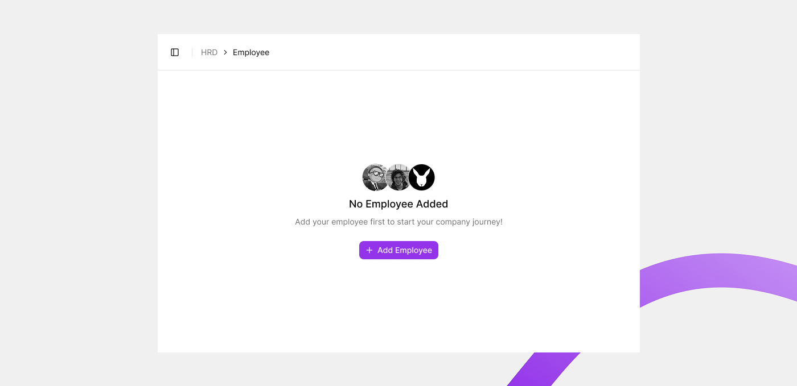
Sudah ada data
Setelah ada karyawan yang terdaftar, tabel menampilkan daftar karyawan sesuai filter yang aktif.
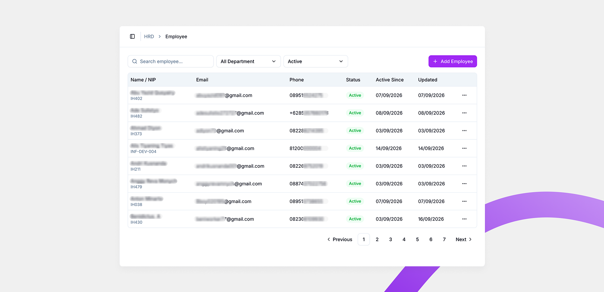
Data sudah banyak
Jika jumlah karyawan melebihi satu halaman tabel, kontrol pagination di bagian bawah (Previous, nomor halaman, Next) menjadi aktif untuk berpindah antar halaman data, seperti terlihat pada contoh di atas.
Kolom tabel
| Kolom | Isi |
|---|---|
| Name / NIP | Nama lengkap karyawan, dengan NIP (Nomor Induk Pegawai) di bawahnya. |
| Alamat email karyawan yang terdaftar. | |
| Phone | Nomor telepon karyawan. |
| Status | Status keaktifan karyawan, misalnya Active. |
| Active Since | Tanggal karyawan mulai aktif. |
| Updated | Tanggal data karyawan terakhir diperbarui. |
Aksi cepat (menu titik tiga)
Setiap baris karyawan punya menu titik tiga (...) berisi aksi berikut.
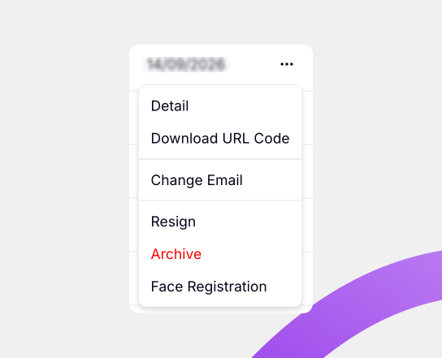
- Detail: membuka halaman Employee Detail untuk melihat data lengkap karyawan tersebut.
- Download URL Code: mengunduh kode atau tautan unik milik karyawan tersebut.
- Change Email: mengubah alamat email yang terdaftar untuk karyawan tersebut.
- Resign: mengubah status karyawan menjadi
Resign. - Archive: mengarsipkan data karyawan, memindahkan statusnya menjadi
Archive. - Face Registration: membuka halaman Face Registration untuk mendaftarkan data wajah karyawan.
Detail langkah dari masing-masing aksi di atas akan dijelaskan lebih lanjut di halaman terkait atau di pembaruan berikutnya.
⚠️ Perhatian: Opsi Archive ditandai dengan warna berbeda (merah) di aplikasi, menandakan aksi ini perlu dilakukan dengan hati-hati.
Lihat juga
Add Employee
Cara menambahkan karyawan baru melalui form bertahap.
Add Employee dipakai untuk menambahkan karyawan baru ke Willa PMS, dimulai dari tombol + Add Employee di halaman Employee List.
Ringkasan
Setelah menekan tombol + Add Employee, muncul dialog untuk memilih sumber data karyawan baru. Halaman ini fokus menjelaskan alur Create Single by Form, yaitu mengisi data karyawan secara manual lewat form bertahap.
Sebelum memulai
- Anda sudah berada di halaman Employee List dan login sebagai HRD.
Langkah-langkah
Buka dialog Add New Employee
- Dari halaman Employee List, ketuk tombol + Add Employee.
- Dialog Add New Employee terbuka, menampilkan tiga pilihan sumber data.
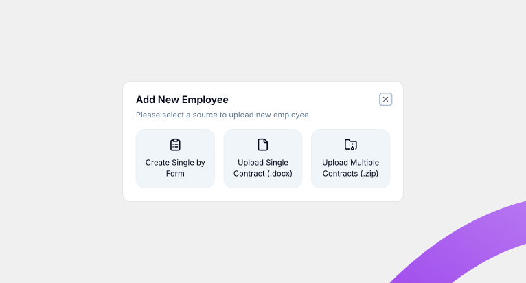
Pilih sumber data
Dialog menyediakan tiga cara menambahkan karyawan.
- Create Single by Form: menambahkan satu karyawan dengan mengisi form secara manual, langkah demi langkah.
- Upload Single Contract (.docx): menambahkan satu karyawan dengan mengunggah satu dokumen kontrak.
- Upload Multiple Contracts (.zip): menambahkan banyak karyawan sekaligus dengan mengunggah kumpulan dokumen kontrak dalam satu file
.zip.
Dokumentasi ini fokus ke Create Single by Form. Detail alur Upload Single Contract dan Upload Multiple Contracts akan ditambahkan di pembaruan berikutnya.
Isi form bertahap (Create Single by Form)
Setelah memilih Create Single by Form, form Create Employee terbuka dan Anda mengisi data karyawan melalui tujuh tahap berurutan.
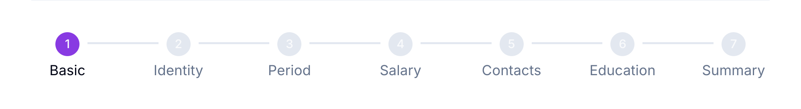
| Tahap | Nama |
|---|---|
| 1 | Basic |
| 2 | Identity |
| 3 | Period |
| 4 | Salary |
| 5 | Contacts |
| 6 | Education |
| 7 | Summary |
Tahap yang sudah selesai ditandai centang pada stepper. Ketuk Next untuk lanjut ke tahap berikutnya, dan Back untuk kembali ke tahap sebelumnya.
ℹ️ Info: Field yang diberi tanda bintang merah (*) wajib diisi. Field tanpa tanda tersebut bersifat opsional.
Tahap 1: Basic
Tahap Basic berisi data identitas utama karyawan.
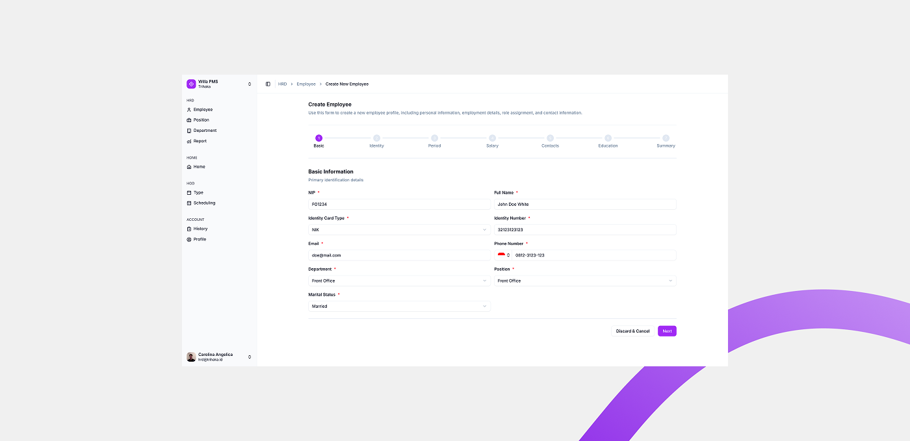
| Field | Wajib | Isi |
|---|---|---|
| NIP | Ya | Nomor Induk Pegawai karyawan. |
| Full Name | Ya | Nama lengkap karyawan. |
| Identity Card Type | Ya | Jenis kartu identitas, dipilih dari daftar. |
| Identity Number | Ya | Nomor kartu identitas karyawan. |
| Ya | Alamat email karyawan yang dipakai untuk login. | |
| Phone Number | Ya | Nomor telepon karyawan. Kode negara dipilih lewat selector bendera di sisi kiri field. |
| Department | Ya | Department tempat karyawan bekerja, dipilih dari daftar. |
| Position | Ya | Jabatan karyawan, dipilih dari daftar. |
| Marital Status | Ya | Status pernikahan karyawan, dipilih dari daftar. |
- Isi semua field pada tahap Basic.
- Ketuk Next.
Anda masuk ke tahap Identity.
⚠️ Perhatian: Tombol Discard & Cancel membatalkan pembuatan karyawan dan membuang data yang sudah Anda isi.
Tahap 2: Identity
Tahap Identity berisi data pribadi dan demografis karyawan.
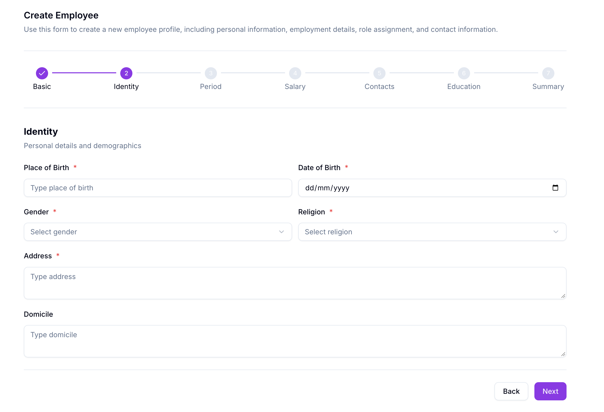
| Field | Wajib | Isi |
|---|---|---|
| Place of Birth | Ya | Tempat lahir karyawan. |
| Date of Birth | Ya | Tanggal lahir karyawan, dengan format dd/mm/yyyy. |
| Gender | Ya | Jenis kelamin karyawan, dipilih dari daftar. |
| Religion | Ya | Agama karyawan, dipilih dari daftar. |
| Address | Ya | Alamat karyawan. |
| Domicile | Tidak | Alamat domisili karyawan. |
- Isi semua field wajib pada tahap Identity.
- Isi Domicile jika diperlukan.
- Ketuk Next.
Anda masuk ke tahap Period.
Tahap 3: Period
Tahap Period berisi informasi awal masa kerja karyawan, termasuk kontrak dan masa percobaan.
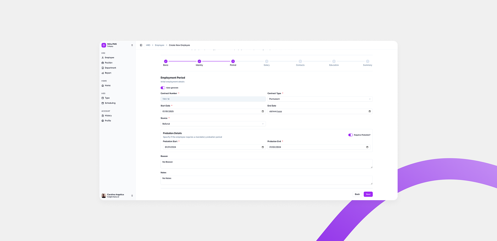
| Field | Wajib | Isi |
|---|---|---|
| Auto-generate | Tidak | Sakelar untuk membuat nomor kontrak secara otomatis. |
| Contract Number | Ya | Nomor kontrak karyawan. Terisi otomatis dan tidak bisa diketik selama Auto-generate aktif. |
| Contract Type | Ya | Jenis kontrak, dipilih dari daftar, misalnya Permanent. |
| Start Date | Ya | Tanggal kontrak mulai berlaku. |
| End Date | Tidak | Tanggal kontrak berakhir. |
| Source | Ya | Sumber karyawan, dipilih dari daftar, misalnya Other. |
| Requires Probation? | Tidak | Sakelar untuk menandai karyawan memerlukan masa percobaan. |
| Probation Start | Ya, jika probation aktif | Tanggal masa percobaan dimulai. |
| Probation End | Ya, jika probation aktif | Tanggal masa percobaan berakhir. |
| Reason | Tidak | Alasan, ditulis dengan teks bebas. |
| Notes | Tidak | Catatan tambahan, ditulis dengan teks bebas. |
- Biarkan Auto-generate aktif agar nomor kontrak terisi otomatis, atau nonaktifkan untuk mengisinya sendiri.
- Pilih Contract Type.
- Isi Start Date, dan End Date jika diperlukan.
- Pilih Source.
- Pada bagian Probation Details, aktifkan Requires Probation? jika karyawan memerlukan masa percobaan.
- Isi Probation Start dan Probation End.
- Isi Reason dan Notes jika diperlukan.
- Ketuk Next.
Anda masuk ke tahap Salary.
Detail tahap 4 sampai 7 (Salary, Contacts, Education, dan Summary) akan ditambahkan di pembaruan berikutnya.
Hasil
Setelah melengkapi ketujuh tahap, karyawan baru tersimpan dan muncul di Employee List.
Lihat juga
Employee Detail
Panduan penggunaan Employee Detail.
🚧 Dokumentasi ini sedang dalam tahap pengembangan. Konten halaman ini akan segera ditambahkan.
Face Registration
Panduan penggunaan Face Registration.
🚧 Dokumentasi ini sedang dalam tahap pengembangan. Konten halaman ini akan segera ditambahkan.
Edit Employee
Panduan penggunaan Edit Employee.
🚧 Dokumentasi ini sedang dalam tahap pengembangan. Konten halaman ini akan segera ditambahkan.
Catatan Fitur: Employee Management
Catatan Do & Don't untuk fitur Employee Management.
🚧 Dokumentasi ini sedang dalam tahap pengembangan. Konten halaman ini akan segera ditambahkan.
Izin Keluar
Panduan penggunaan Izin Keluar.
🚧 Dokumentasi ini sedang dalam tahap pengembangan. Konten halaman ini akan segera ditambahkan.
Catatan Fitur: Izin Keluar
Catatan Do & Don't untuk fitur Izin Keluar.
🚧 Dokumentasi ini sedang dalam tahap pengembangan. Konten halaman ini akan segera ditambahkan.
Izin Sakit
Panduan penggunaan Izin Sakit.
🚧 Dokumentasi ini sedang dalam tahap pengembangan. Konten halaman ini akan segera ditambahkan.
Catatan Fitur: Izin Sakit
Catatan Do & Don't untuk fitur Izin Sakit.
🚧 Dokumentasi ini sedang dalam tahap pengembangan. Konten halaman ini akan segera ditambahkan.
Holiday Management
Panduan penggunaan Holiday Management.
🚧 Dokumentasi ini sedang dalam tahap pengembangan. Konten halaman ini akan segera ditambahkan.
Catatan Fitur: Holiday Management
Catatan Do & Don't untuk fitur Holiday Management.
🚧 Dokumentasi ini sedang dalam tahap pengembangan. Konten halaman ini akan segera ditambahkan.
Leave Management
Panduan penggunaan Leave Management.
🚧 Dokumentasi ini sedang dalam tahap pengembangan. Konten halaman ini akan segera ditambahkan.
Catatan Fitur: Leave Management
Catatan Do & Don't untuk fitur Leave Management.
🚧 Dokumentasi ini sedang dalam tahap pengembangan. Konten halaman ini akan segera ditambahkan.
Akun & Pengaturan
Panduan penggunaan Akun & Pengaturan.
🚧 Dokumentasi ini sedang dalam tahap pengembangan. Konten halaman ini akan segera ditambahkan.
Troubleshooting
Panduan penggunaan Troubleshooting.
🚧 Dokumentasi ini sedang dalam tahap pengembangan. Konten halaman ini akan segera ditambahkan.